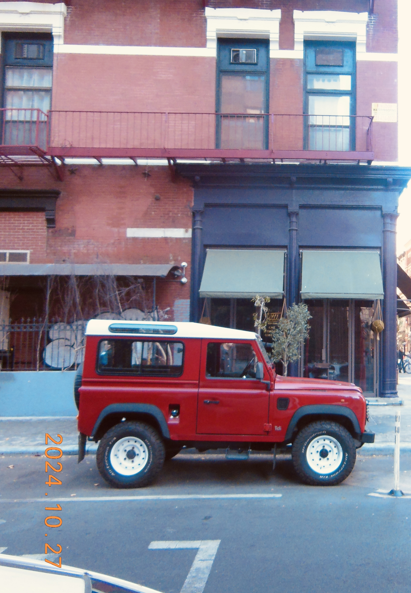

Aperature, Shutter Speed, ISO
These three components DEPEND on each other. You need to tune
each of these based on the environment and photo you want to create.

Analogy:
When eating cereal size of bowl, amount of milk, and amount of cereal matters
A narrow bowl can leave cereal dry at the top, too much milk will make the cereal
soggy, and too little cereal will leave the bowl feeling empty and unfulfilling. Only
a perfect balance of everything makes a perfect breakfast delight!